// AWS User Group Orizaba
> TALLER PRÁCTICO
Todos pueden
programar con Kiro
programar con Kiro
Transforma tus ideas en aplicaciones reales usando AI
$
José María Chico López
/
github.com/ChemaCLi
> SPEAKER

José María
Chico López
Ing. de Sistemas de profesión
Software Crafter de oficio
github.com/ChemaCLi

> REPO DEL TALLER
// AWS User Group Orizaba
> INSTALA ANTES DE EMPEZAR
Descarga Kiro
> EDITOR

Kiro IDE
Editor completo con el agente
kiro.dev/ide
> TERMINAL

Kiro CLI
El agente en tu terminal
kiro.dev/cli
// AWS User Group Orizaba
> WHOAMI
Mi perfil de GitHub

// AWS User Group Orizaba
Lo que haremos hoy
01
Kiro: qué es, qué resuelve y esquema de precios
02
Método para abordar un proyecto
03
Tres escenarios para trabajar con IA
04
Construimos una app en vivo
05
Práctica y cierre
// AWS User Group Orizaba
> EL PUNTO DE PARTIDA
El internet desbloqueó la barrera técnica
Puso al alcance de cualquier persona el conocimiento y las herramientas para reparar y crear sus propias herramientas y productos.

// AWS User Group Orizaba

> EL SALTO
La IA redujo muchísimo la fricción
Ya no solo es posible: ahora también es fácil.
// AWS User Group Orizaba
> EL RUIDO
Todos publican casos de éxito
· LAS EMPRESAS
Anuncian que la IA hará todo por nosotros.
· LAS STARTUPS
Productos y empresas creados en tiempo récord.
· LINKEDIN
Ejércitos de agentes de IA que, dicen, trabajan mejor que programadores humanos.

// AWS User Group Orizaba
> LA REALIDAD
En la práctica, las cosas no van tan bien
Entonces, ¿por qué no tenemos los mismos resultados?
🤖💥
expectativa vs realidad

// AWS User Group Orizaba
> EL CUENTO DEL AUTO
01 / 06
Le pides algo a la IA
Tú: «Quiero un auto reluciente, diseño sofisticado, moderno, para 2 pasajeros».

// AWS User Group Orizaba

> EL CUENTO DEL AUTO
02 / 06
La IA dice que sí a todo
IA: «¡Excelente idea!»
// AWS User Group Orizaba
> EL CUENTO DEL AUTO
03 / 06
Resultado decepcionante
La regañas y le pides que se esfuerce y genere algo decente.

// AWS User Group Orizaba

> EL CUENTO DEL AUTO
04 / 06
Lo hace, pero sale caro
IA: «Aquí tiene, señor. Lo hice con mis lágrimas y 20 dólares de tokens».
// AWS User Group Orizaba
> EL CUENTO DEL AUTO
05 / 06
Impresionante, pero impráctico
Un resultado vistoso, pero poco útil y posiblemente ilegal.

// AWS User Group Orizaba
> EL CUENTO DEL AUTO
06 / 06
Lo que realmente necesitabas
...probablemente era algo ligeramente distinto a lo que imaginabas en primer lugar, de ahí la importancia de contar con alguien que te cuestione y te ayude a refinar las ideas.

// AWS User Group Orizaba
> EL MISMO PUNTO DE PARTIDA
¿Qué pasa si partimos del mismo prompt?
$ PROMPT
«Una aplicación que me permita registrar mis tareas, categorizarlas por tipos x, y, z, con un pomodoro incluido que me invite a continuar mi progreso».
// AWS User Group Orizaba
> DIFERENTES RESULTADOS
01 / 04
Solo el prompt
Sin contexto ni método: solo la idea tal cual.
// AWS User Group Orizaba
> DIFERENTES RESULTADOS
02 / 04
Prompt + skills
El mismo prompt, apoyado en skills recomendadas de internet.
// AWS User Group Orizaba
> DIFERENTES RESULTADOS
03 / 04
Prompt + Planning
Planeación, Diseño y Ejecución. Primero modo Plan, agregando Skills y Agents apropiados.
// AWS User Group Orizaba
> DIFERENTES RESULTADOS
04 / 04
Spec Driven Development
Usa un framework de SDD, Skills, Agents y Steerings.
// AWS User Group Orizaba
> ECOSISTEMA
El ecosistema creciente de AI
Spec Driven Development
Agents
Skills
MCPs
Harness Engineering
Prompt Engineering
IDEs
CLIs
Vibe Code
LLM
ChatGPT · Claude Fable
Kimi K3 · DeepSeek · Grok
Kimi K3 · DeepSeek · Grok
Context Rot
Context Poisoning
Jailbreaking
Hallucinations
Emojis traffic
Prompt Injection
// AWS User Group Orizaba
> UNA SOLA HERRAMIENTA
Ahí es donde entra Kiro
Facilita el uso de todas estas herramientas dispersas dentro de una sola herramienta unificada.

01 · VIBE CODING
Un chat, sin complejidades
Disfruta los beneficios del ecosistema conversando: describes lo que quieres y Kiro lo construye.
02 · SPECS
Estructurado y controlado
Trabaja con requerimientos, diseño y tareas, y decide tú en cada paso.
// AWS User Group Orizaba
> TODO EN UN MISMO LUGAR
Kiro lo consigue a través de
Steerings
Reglas y contexto del proyecto que Kiro respeta siempre
Custom Agents
Agentes a la medida, cada uno con su rol y sus permisos
Specs
Requerimientos, diseno y tareas para trabajar con rigor
Powers
Capacidades extra que amplian lo que Kiro puede hacer
Memories
Recuerda tus proyectos y aprende de tus correcciones
Workflows
Flujos de varios pasos y agentes que corren por ti
> ABIERTO
Soporta estandares del ecosistema como Skills y archivos AGENTS.md, y se integra con servidores MCP.
// AWS User Group Orizaba
01 · KIRO
Un agente de IA que te acompaña de la idea al código, desde el enfoque que necesites
Aterriza ideas
Convierte lo que quieres en requerimientos, diseño y tareas
Mantiene el contexto
Reglas del proyecto y agentes que respetan tu forma de trabajar
Delega el trabajo pesado
Construye, prueba y automatiza mientras tú decides
// AWS User Group Orizaba
Un mismo Kiro, cinco formas de usarlo
Superficie
Qué es
Ideal para
IDE
Editor completo con agente, specs y reglas del proyecto
Proyectos con control fino del código
CLI
El agente en tu terminal, fácil de automatizar
Scripts, flujos y servidores
Web
Kiro en el navegador, sin instalar nada
Iteraciones rápidas, investigación, pruebas
Mobile
Seguimiento desde el teléfono (preview)
Revisar avances en movimiento
Crew
Espacio persistente que recuerda y programa tareas
Automatizar trabajo y vida personal
// AWS User Group Orizaba
NUEVO · OPEN SOURCE
Kiro Crew: un equipo de agentes que no olvida
Memoria entre sesiones
Recuerda tus proyectos y convierte tus correcciones en lecciones editables
Tareas programadas
Trabajos recurrentes y monitoreo que siguen corriendo cuando no estás
Varios agentes a la vez
Conversaciones en paralelo y subagentes que te reportan resultados
Desde donde estés
Escritorio, una máquina remota o canales de chat como Telegram o Discord
Gratis (Apache 2.0) · usa los créditos de tu plan Kiro · corre sobre Kiro CLI en macOS y Linux
// AWS User Group Orizaba
¿Cuál de todos debería usar?
Algo personal
Web o IDE en modo Vibe para explorar sin miedo
Crew para automatizar tus rutinas
Resolver un problema
IDE o CLI con reglas de proyecto y agentes
Crew para lo que se repite cada semana
Solución profesional
IDE en modo Spec, estándares y hooks
CLI para integrarlo en flujos de equipo
// AWS User Group Orizaba
Precios: todo se mide en créditos
Plan
USD / mes
Créditos
Free
$0
50
Pro
$20
1,000
Pro+
$40
2,000
Pro Max
$100
5,000
Power
$200
10,000
El modelo importa
Cada modelo consume créditos a distinta tasa. [Equivalencia en tokens por crédito: verificar en kiro.dev/pricing]
Excedente
En planes de pago, $0.04 USD por crédito extra. Los créditos no se acumulan al mes siguiente.
Plan de estudiante
Un año gratis con 1,000 créditos al mes, sin tarjeta. Se verifica una sola vez con correo universitario.
// AWS User Group Orizaba
02 · MÉTODO
Cómo diseñar tu aplicación
01
Entiende el problema
¿Qué necesita resolverse y para quién?
→
02
Plantea la solución
Salida esperada: ¿qué quiero obtener?
↓
03 · DISEÑA LA APP
ENTRADA
Entrada
¿Con qué datos?
→
PROCESO
Proceso
¿Cómo se va a hacer?
→
SALIDA
Salida
La que planteaste en el 02
Primero defino qué quiero obtener; después diseño cómo llegar ahí.
// AWS User Group Orizaba
El método es el mismo. Lo que cambia es qué tan rigurosos somos.
Entre más claros seamos, mejores resultados obtenemos, pero más lento será ver resultados.
// AWS User Group Orizaba
03 · FORMAS DE TRABAJAR
Hay 3 formas de trabajar
01 · Vibe coding
Rápido y fácil
El resultado importa más que el código.
02 · Vibe coding + Framework
Más control, mejor calidad
La IA sigue nuestros parámetros.
03 · Specs
Lento y predecible
Todo se decide y se documenta antes de empezar.
Más control significa más tiempo y más conocimiento técnico.
// AWS User Group Orizaba
FORMA 01 · COMPLEJIDAD BAJA
Vibe coding
01
Facilidad máxima
Describes lo que quieres y la IA construye.
02
Resultados rápidos
Aceptables, sin mucha espera.
03
Importa el resultado
El código pasa a segundo plano.
04
La IA aporta ideas
Más propenso a bugs a corto y mediano plazo.
EL TRATO
Aceptas lo que la IA decida a cambio de velocidad.
// AWS User Group Orizaba
FORMA 02 · COMPLEJIDAD MEDIA
Vibe coding + Framework
01
Más tiempo
Requiere dedicarle preparación, con resultados relativamente rápidos.
02
Seguimos nuestros parámetros
Mayor control de los detalles.
03
Mejor calidad
Código aceptable y menos propenso a bugs.
04
Sigue el riesgo humano
Los errores de definición del usuario siguen ahí.
CON QUÉ SE LOGRA
Skills · Steerings · Custom agents · Powers · MCPs
// AWS User Group Orizaba
FORMA 03 · COMPLEJIDAD ALTA
Specs
Más lento
Pero con resultados más predecibles.
Decides tú primero
Todas las decisiones se toman antes de empezar el desarrollo.
Control más grande
Todo queda documentado.
Requiere experiencia
Conocimiento técnico especializado.
// AWS User Group Orizaba
Un equipo de agentes, cada uno con su rol
guia
Conduce el flujo y delega en los demás
analista-requerimientos
Extrae qué quieres con preguntas
disenador
Pantallas, flujo y modelo de datos
constructor
Implementa tarea por tarea
tester
Pruebas automáticas y guía manual
revisor
Revisa contra estándares y principios
Los agentes son los mismos en los tres escenarios. Las reglas de cada carpeta definen qué tan rigurosos son.
// AWS User Group Orizaba
04 · EN VIVO
Construyamos: Focus Garden
.kiro/
├─ steering/
├─ specs/
├─ agents/
├─ skills/
├─ workflows/
└─ sample-specs/
1
Descarga el repo y copia la carpeta de tu escenario
2
Renómbrala con el nombre de tu app y ábrela en Kiro
3
Pega el contenido de prompt-inicio.md en el chat
4
Responde las preguntas y deja que el flujo te guíe
// AWS User Group Orizaba
> FIN DEL TALLER
¡Gracias!
Gracias por programar con nosotros. Sigue construyendo con Kiro.
// AWS User Group Orizaba · Todos pueden programar con Kiro